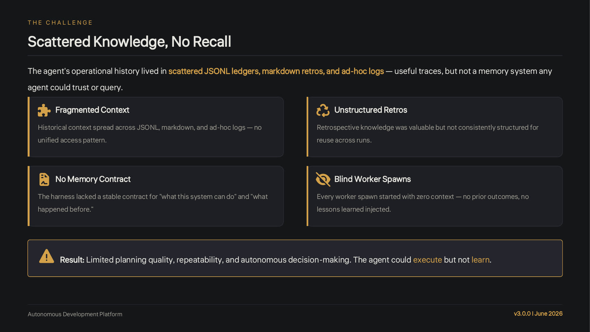

Code: continuous-agent at e43ae97, the May 31 commit after the v3.0.0 tag. Deck: 15 slides, in the repo. The agent itself, up to v2.1, is in my AI Tinkerers write-up. First published on LinkedIn on May 31, 2026. Rewritten for this site in October 2026.
1. Why memory matters: my agent could execute but not learn
Memory is the hard part of agentic systems. An agent without memory runs every task like it's the first time. The model is smart, the tools work, and nothing compounds. The real problem was never reasoning. It's storage and retrieval.
Before V3.0, my agent had traces but no memory. Its history lived in scattered JSONL ledgers, markdown retrospectives and ad hoc logs. Those were useful traces, but nothing an agent could trust or query. The deck names four gaps: context spread across formats with no single way in, retrospectives that were valuable but not structured for reuse, no stable contract for what the system can do and what happened before, and blind worker spawns, where every worker started with zero context. The agent could execute, but it couldn't learn.

One idea shaped the whole design. A memory you store but never read back might as well not exist. If a tree falls in the forest and nobody hears it, did it make a sound? If an agent saves a lesson and never retrieves it, did it learn anything? Storage is the easy half. Retrieval decides whether the memory was ever real.
2. A second brain the executive owns, with git as the source of truth
V3.0 turns that scattered history into a second brain. The executive writes to it as it works and reads from it before it acts. mem0 Cloud hosts the store. Git and markdown stay canonical: the store is a derived copy, shaped for retrieval, and when the two disagree, the repo wins. The store can always be rebuilt from the repo. The harvester writes high-signal memories only, never raw chat history.
I locked four pillars before writing the code, in the hosting decision on May 15:
- Executive tier only. Workers never call mem0, never hold the API key and never get the MCP server. They get relevant context fed to them in a memory pack.
- Git is the source of truth. mem0 stores knowledge derived from the repo, not authored content.
- Skills first, not a TypeScript module. The contract lives in
SKILL.mdfiles, and deterministic helpers sit in each skill'sreferences/folder, run through Bash. The one TypeScript file undersrc/agentic/memory/runs the hooks and holds no prompts. - One writer. Only the
memory-harvesterskill, run by the executive, writes to mem0. A directclient.add()from a worker or a script is an anti-pattern. Its partner,memory-reader, is read-only.
![Hand-drawn diagram, V3.0 Memory: Ingestion and Retrieval Lifecycle. Write path, where the executive is the sole writer: write hooks C, E and D feed the memory-harvester, which classifies each fact, then classify and validate against schema v1.0.0, then mem0.add() and poll until SUCCEEDED, into the mem0 second brain. Read path, read-only: read hooks A, B and D call the memory-reader, which runs a natural-language agentic search and returns a synthesis or a Memory Pack, which goes into the worker's CLAUDE.md as static markdown. A memory-snapshot makes a daily JSON backup. Notes: 0 to 3 writes per run, 3 to 8 per weekly retro; no graph traversal, the executive decides in natural language which memories serve this goal.](images/ingestion-retrieval.jpg)
3. Five memory types
I started with a taxonomy, because not all memory is the same:
| Type | What it holds | Confidence |
|---|---|---|
| Principle | The rules that never change, from the constitution and the PRDs. Immutable. | 1.0 |
| Semantic | Cross-run facts: what works and what fails. | 0.7 to 0.95 |
| Procedural | How to do something, learned from doing it. | 0.6 to 0.9 |
| Episodic | What actually happened in a given run, with a timestamp. | 1.0 |
| Reflective | Patterns distilled across many runs. | 0.7 to 0.95 |
Every memory also carries all four of mem0's scope IDs: user_id, agent_id, app_id and run_id. mem0 only requires one. I wanted all four, so retrieval filters never drift. agent_id is always executive, app_id is the project the lesson is useful for (or _global for cross-project lessons), and every run_id starts with a date. A versioned metadata envelope carries the type, confidence, the trigger that wrote it and the source file it came from. classify.ts rejects a malformed payload before mem0 ever sees it.
![Hand-drawn diagram, V3.0 Memory: Taxonomy and Metadata. Left, five memory types: principle, immutable rules from the constitution, PRDs and specs, confidence 1.0, never overwritten; semantic, cross-run facts, confidence 0.7 to 0.95; procedural, reusable how-to and step sequences that worked, 0.6 to 0.9; episodic, a timestamped record that this run happened, 1.0, about one per run; reflective, patterns observed across many runs and retros, 0.7 to 0.95. Right, the metadata envelope at schema v1.0.0: four scope IDs with agent_id always executive, classification, provenance, environment isolation, and optional aids: outcome, up to eight tags, expires_at.](images/taxonomy.jpg)
4. Storing: five hooks in the loop
Storage is automatic. Hooks inside the agent's loop write things down: after a run it classifies the outcome, and after a retrospective it distills the lesson. The agent never decides to remember. Remembering is just part of how it runs.
| Hook | Where it runs | What it does |
|---|---|---|
| A | Before work selection | Reads. Consults memory before the executive picks a goal. |
| B | Before a worker spawns | Reads, for the worker. Bakes a memory pack into the worker's CLAUDE.md. |
| C | After a successful run | Writes. Classifies the outcome and stores 0 to 3 memories. |
| D | Before failure diagnosis | Reads, and writes only on a repeated-failure pattern. Surfaces earlier failures with similar signals. |
| E | After a retrospective | Writes. Distills reflective memories from the retro document. |
Each hook is its own SKILL.md, and one function runs all five. runMemoryHook() checks the master switch, V3_MEMORY_ENABLED, then the hook's own flag. A hook that's switched off returns without doing anything. Errors come back as values instead of exceptions, so memory can never stop the loop.
export async function runMemoryHook( name: HookName, ctx: HookContext,): Promise<HookResult> { const flag = HOOK_FLAG[name]; if (!memoryEnabled()) { return { ran: false, skipped: true, reason: "V3_MEMORY_ENABLED off", finalText: "" }; } if (!isTrue(process.env[flag])) { return { ran: false, skipped: true, reason: `${flag} off`, finalText: "" }; }The rollout was staged, one hook per week, and every hook flag ships off in .env.executive.example. Stage 1 was Hook C, write only and the lowest risk. Hook E needs the most judgment, so it came last. At go-live, B, C, D and E were on and A was off. Pick a situation and flip the flags to see which hooks fire in one pass of the loop:
Start from
Flags in .env.executive
This pass of the loop
What runs, in order
- Phase 3: select workA bundle is queued, so the loop may consult memory first.
- Hook A · pre-work-selectionskippedrunMemoryHook returns { ran: false, reason: "V3_MEM_HOOK_PRE_WORK off" }
- Hook B · pre-spawn-packreads mem0Searches mem0 and returns a Memory Pack of 2K tokens or less.
- Phase 4: the worker buildsThe pack is appended to the worker's generated CLAUDE.md. The worker reads static markdown and never calls mem0.
- Phase 5 and 6: validation passesState, ledgers, Notion and Discord are updated.
- Hook C · post-run-harvestwrites mem0The harvester decides 0 to 3 memories from this run (an episodic record, maybe a semantic or procedural lesson) and writes them.
Static example: a goal that passes, with the go-live flags. One hook reads mem0, one writes.
Worker calls to mem0: 0. Every hook runs inside the executive.
run-hook.ts and the hook positions follow executive-loop.ts at e43ae97. What each hook finds in memory is not simulated.One fix from go-live is visible in the idle cases. Hook A used to fire on every 30-second idle loop, about 8 to 14 retrievals each time, consulting memory about nothing. Now it only runs when a bundle is actually queued.
5. Retrieving: ask in plain English
Retrieval got the most thought. I almost shipped a fixed checklist of queries, then scrapped it. Instead, memory-reader treats retrieval as a judgment call: the executive decides which past knowledge serves the goal in front of it, and asks for it in full sentences instead of short keyword bags.
# before: a keyword bag
npm install build first try clean success
# after: a question
What's the best pattern for building a Node module that passed all verifiers on first try?mem0 ranks results by embedding similarity, so a whole question carries intent that a list of keywords loses. It also doesn't walk a graph from one fact to a related one, so the reader plans on 3 to 8 queries and refines each one from what came back. That iteration is the multi-hop. It stops when the top results stop changing, when it has at least three relevant memories, or after about eight queries.
The result for a worker is small on purpose. The memory pack is capped at 2K tokens, cut by score if it runs over, with a confidence floor of 0.7. It's appended to the worker's generated CLAUDE.md as static markdown. In the end-to-end test, Hook B's pack told a worker to follow a prior run's module pattern and not to push, as the constitution requires.
![Deck slide, Agentic Retrieval and Memory Pack. The shift: the memory-reader was reframed from a fixed query checklist into an agentic judgment task, asking in full natural-language sentences. Before: npm install build first try clean success. After: What's the best pattern for building a Node module that passed all verifiers on first try? 3 to 8 refined queries per turn, a memory pack of 2K tokens or less. Memory pack flow: the executive decides what memory serves this goal, natural-language search through the memory-reader skill, the pack is baked into CLAUDE.md for the worker spawn, the worker executes with context and never queries mem0. E2E validated.](images/slide-retrieval.jpg)
6. Rolling it out: two POCs, a backfill and a silent bug
Before any hook code, I built two proofs of concept, one on the mem0 SDK and one through its MCP server. Both validated mem0's asynchronous writes. Integration came next: the skills wired into the loop, the CLI, and a backfill of the existing corpus. The whole build took about eight weeks.
![Deck slide, The 8-Week Build Journey. Timeline: April 3 to 19, the vision, started as a v2.3 cloud DB goal and evolved into second-brain positioning; May 15, hosting decision, mem0 Cloud chosen, four pillars locked; May 16, POC and taxonomy, SDK and MCP POCs, five memory types; May 16, implementation plan, five hooks, staged rollout; May 23 to 24, integration, MCP setup, skills wired, CLI built, corpus backfilled; May 30 to 31, go-live and tag. Key milestones: two POCs in one day, taxonomy defined in one session, and the silent bug. Quote from the implementation plan, May 16: we have zero data on whether the playbooks produce useful memories; staging gives an audit window between each addition.](images/slide-journey.jpg)
The brain didn't start empty. The backfill migrated about 134 memories through four harvest lanes (principles, retros, capabilities and episodic records from completed projects), and 22 test memories were purged. The executive talks to mem0 through one deterministic surface, ./bin/mem0, driven through Bash. It bakes in the gotchas: the filter format, snake and camel casing, auth, polling for async writes and schema validation. A PM2 cron entry snapshots the whole store to JSON at 04:00 every day, as a disaster recovery backup.
The staged rollout came straight from the implementation plan. On May 16 I wrote: "We have zero data on whether the playbooks produce useful memories; staging gives an audit window between each addition."
One bug failed silently. The documented production line in .env.executive is V3_MEM0_COHORT= with nothing after it. dotenv loads that as an empty string, and an empty string isn't null or undefined, so the ?? chain in applyDefaults() kept it. Every write got stamped with cohort: "", and the validator rejected every single one. The hook still logged ok, because the agent's turn itself had succeeded. I root-caused and fixed it on go-live day, in b4f4554:
const cohortFromEnv = process.env.V3_MEM0_COHORT; const cohortFromEnv = process.env.V3_MEM0_COHORT || undefined; // unchanged, a few lines down: const cohort = m.cohort ?? cohortFromEnv ?? undefined; if (cohort !== undefined) metadata.cohort = cohort;The same commit made the hook log a histogram of the tools it called and the last 400 characters of its answer, so a harvest whose writes all fail can't read as success anymore. Try the three versions of that line, before and after the fix:
The line in .env.executive
The code
defaults.ts
// defaults.ts before b4f4554 const cohortFromEnv = process.env.V3_MEM0_COHORT; const cohort = m.cohort ?? cohortFromEnv ?? undefined; if (cohort !== undefined) metadata.cohort = cohort;
Follow the value
- .env.executive
V3_MEM0_COHORT= - process.env.V3_MEM0_COHORT
"" - cohortFromEnv
"" - metadata.cohort
"" - classify.ts
metadata.cohort: when set, must be a non-empty string
Every write is rejected before it reaches mem0.
[MEMORY] hook post-run-harvest ran: N tool calls, …ms, okThe hook log still says ok: the agent turn succeeded, even though every write failed.?? and || run live in your browser, and the rule is the one in classify.ts. The log lines follow the format in run-hook.ts, with counts and timings left out.7. What's still off, and what's next
The full loop (read, pack, execute, write) is validated end to end. Hook A is still off. It stays audit-only until its synthesis actually changes which goal gets picked. Until then it's pure retrieval cost against the retrieval budget on my mem0 plan, and read hooks are the expensive side.
The deck's roadmap from there: turn on Hook A once its synthesis earns that, build the V3.1 observability dashboard on top of memory I can trust, try multiple agents in parallel with partitioned scope in V4.0, and keep a self-hosted path, with a migration to open-source mem0 ready.
V3.0 is the agent I've been building in the open since January, and the code is all on GitHub. If you're building memory into your own agents, I'd like to know how you handle retrieval.